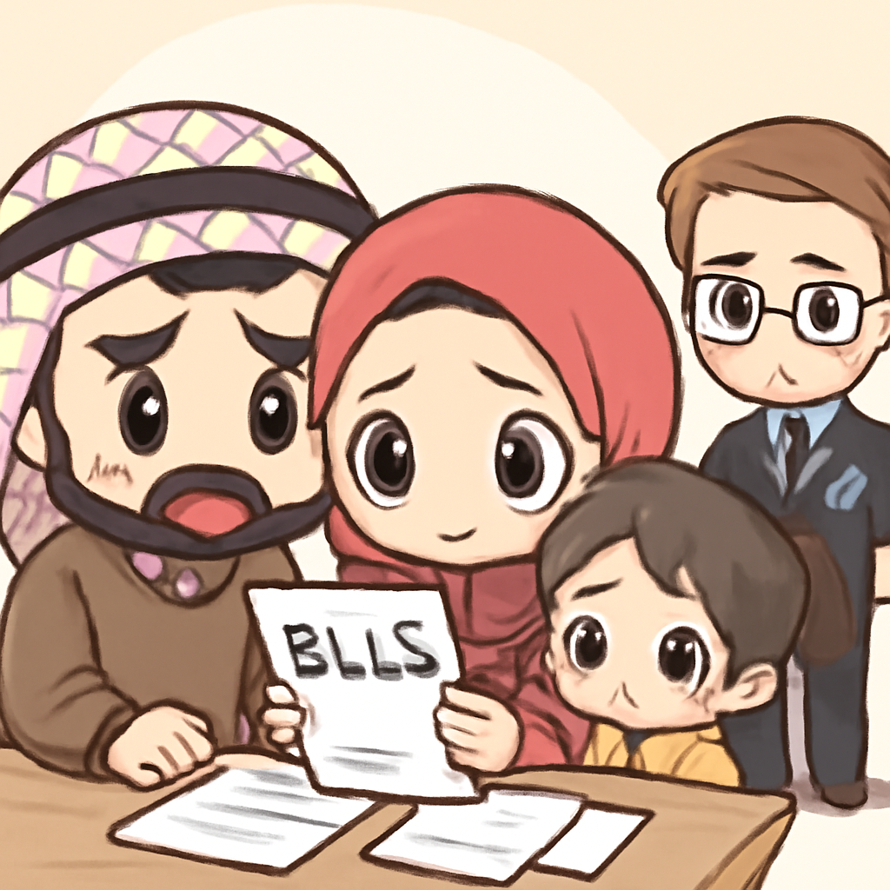
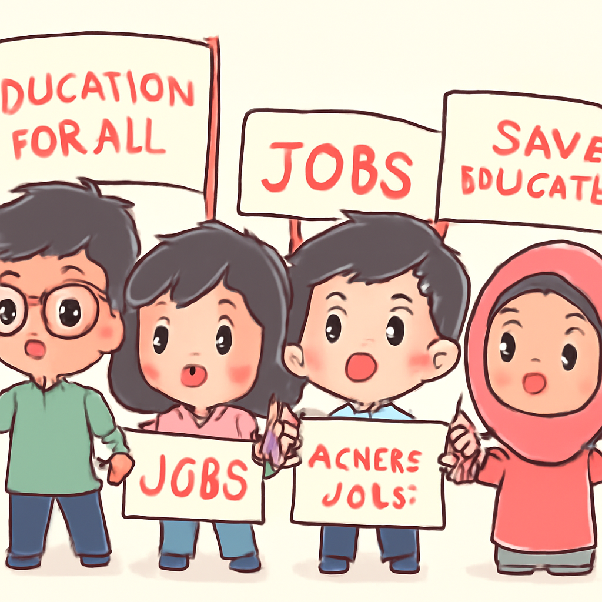
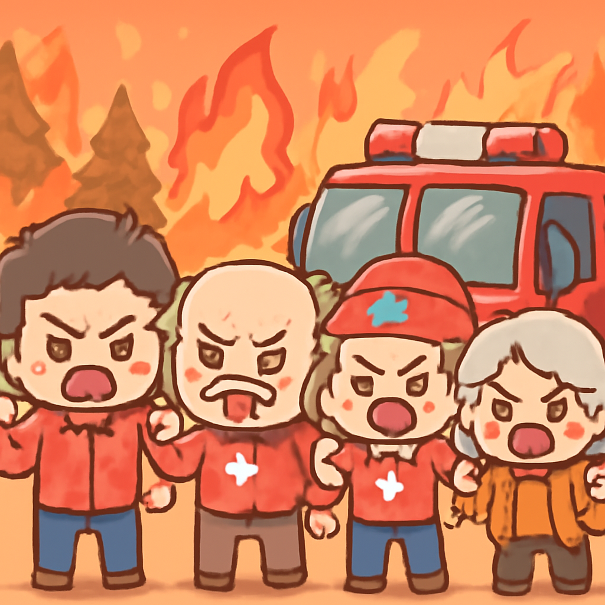

其一 · 美國華府 · 美國與沙烏地阿拉伯簽署核協議
美國與沙烏地阿拉伯達成和平核合作協議。
在美國華府，能源部宣布與沙烏地阿拉伯簽署了一項和平核合作協議，這項協議不僅讓美國企業可以進入沙國的核能市場，還可能改變中東的能源格局。此舉或許會引發周邊國家的關注，大家都在想，難道中東要成為核能新秀了嗎？
🔗 原始新聞 ↗
2026-07-23 · 以古觀今，以笑抗愁
美國與沙烏地阿拉伯達成和平核合作協議。
在美國華府，能源部宣布與沙烏地阿拉伯簽署了一項和平核合作協議，這項協議不僅讓美國企業可以進入沙國的核能市場，還可能改變中東的能源格局。此舉或許會引發周邊國家的關注，大家都在想，難道中東要成為核能新秀了嗎？
🔗 原始新聞 ↗
以色列銀行可能停止與巴勒斯坦銀行的交易。

在以色列，兩家主要銀行警告如果巴勒斯坦銀行不改變交易方式，它們將中止合作。這將對西岸的進出口造成重大影響，讓許多家庭的生活更加困難。看來，經濟戰爭比真正的戰爭來得更讓人頭痛。
🔗 原始新聞 ↗
印度年輕人對教育及就業抗議聲浪高漲。

在印度，年輕人發起抗議運動，對教育體系的不滿及高失業率表示抗議，這對執政已久的政府構成挑戰。看來，年輕人對未來的焦慮已經不再是小道消息，而是成為了街頭的主題曲。
🔗 原始新聞 ↗
伊朗對特朗普的威脅做出強硬回應。
在伊朗，面對特朗普的威脅，伊朗的中央指揮部展開了新一輪攻擊，這已經是連續第12天的軍事行動。這場衝突讓人不禁想問，這場衝突是否真的能夠平息，還是會升級成為更大的危機？
🔗 原始新聞 ↗
加拿大居民對火災應對措施表示不滿。

在加拿大北部，居民們對當局在野火蔓延期間的信息傳遞和支持感到失望，很多人表示自己的警報被忽視。看來，這場火災不僅燒掉了樹木，還燒掉了居民的信心。
🔗 原始新聞 ↗